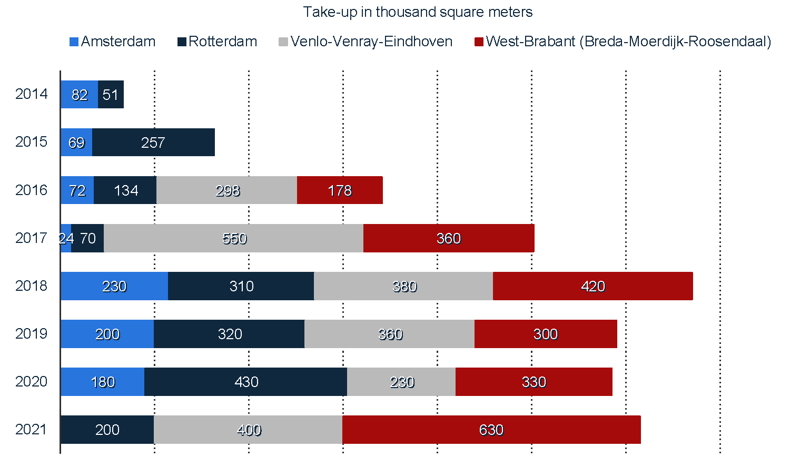
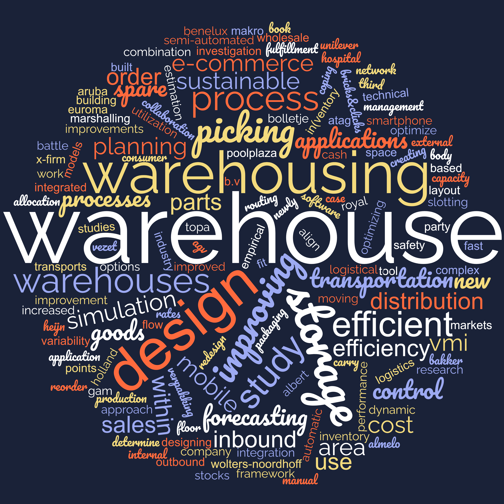

2 Warehousing in the MSc IEM curriculum
Warehousing is a mandatory course of the Manufacturing Logistics (ML) orientation within the Production and Logistics Management (PLM) specialization of the Master (of Science) program Industrial Engineering and Management (M-IEM) program1.
The PLM specialization focuses on designing and managing logistics and supply chain processes.
The M-IEM degree has a study load of 120 ECs and comprises a set of mandatory courses/activities at program, specialization, and orientation levels. Table 2.1 presents such courses for M-IEM/PLM/ML (totaling 75 ECs). The rest of the study load is divided among elective courses (45 ECs) and the graduation thesis (30 ECs).
| Mandatory | Code | Course | Quartile | ECs | Test3 |
|---|---|---|---|---|---|
| M-IEM | 201700020 | IEM research orientation | 1 + 3 | 5 | W |
| M-IEM | 201400174 | Data Science | 1 + 2 + 3 | 5 | W |
| M-IEM | 202001464 | Thesis Preparation | - | 5 | - |
| M-IEM | 194100060 | Thesis | - | 30 | - |
| PLM | 201800003 | Operations Research Techniques 1 | 1 + 3 | 5 | W |
| PLM | 201800004 | Operations Research Techniques 2 | 4 | 5 | P |
| PLM | 191820210 | Simulation | 1 | 5 | PW |
| ML | 201800007 | Planning & Scheduling | 4 | 5 | PW |
| ML | 201800009 | Advanced Inventory Management | 2 | 5 | PW |
| ML | 191820120 | Warehousing | 4 | 5 | W |
2.1 Recommended course schedules
The first 1.5 years of M-IEM focus on teaching and learning activities, whereas the last semester is fully dedicated to the graduation project of 30 EC. Since efficient and cost-effective warehousing operations are frequently on-demand in industry, there is a wealth of opportunities to conduct the graduation project in several organizations (see a complete list of MSc theses on warehousing in Section 2.3.3).
Table 2.2 summarizes the recommended schedules for M-IEM/PLM/ML mandatory courses. Notice that students starting the program in September (Table 2.2 (a)) will have already covered most of the program’s disciplines by the time the Warehousing course starts.
Table 2.2: M-IEM/PLM/ML recommended schedules.
| Quartile | Activity |
|---|---|
| Q1 | Simulation, IEM Research Orientation, OR Techniques 1 |
| Q2 | Data Science, Advanced Inventory Management |
| Q3 | SMOM |
| Q4 | OR Techniques 2, Planning and Scheduling, Warehousing |
| Q1 | |
| Q2 | Thesis Preparation |
| Q3 | Thesis |
| Q4 | Thesis |
| Quartile | Activity |
|---|---|
| Q3 | IEM Research Orientation, OR Techniques 1, SMOM |
| Q4 | Planning and Scheduling, OR Techniques 2, Warehousing |
| Q1 | Simulation |
| Q2 | Data Science, Advanced Inventory Management |
| Q3 | |
| Q4 | Thesis Preparation |
| Q1 | Thesis |
| Q2 | Thesis |
2.2 Learning outcomes in the context of the program competences
The M-IEM program aims at educating students to become well-rounded industrial engineers and managers. M-IEM graduates can quickly identify, thoroughly comprehend, critically assess, correctly apply, and creatively integrate existing scientific knowledge to analyze problems and design solutions (see the detailed program ILOs in Section 7.1).
Table 2.3 shows how the Warehousing course learning outcomes underpin M-IEM competencies, providing quantitative and qualitative methods to design, manage, control, and evaluate contemporary warehouses.
Once the course is mandatory for M-IEM PLC urse within the PLC track, all its learning objectives are strongly related to the program’s competency A7, which entails mastering M-IEM core disciplines. Also, since all course content is fine-tuned to real-world study cases, all learning objectives address competency A4 conceptually or through practical examples. In special, learning outcomes W1, W2, W3, and W4 entail mastering topics within Warehousing, a pre-requisite to critically analyzing and framing concrete situations.
Conversely, W5, W6, and W7 focus on learning state-of-the-art methods to optimize warehouses at different planning levels. W5 and W6 are strongly related to A3 and A5, respectively, focusing on implementing and evaluating quantitative methods, whereas W7 addresses the research components of the program (ILOs A1, A2, and A8).
Finally, contributing to meaningful research (A8) in the context of warehousing requires a grasp of all course ILOs, especially W7.
| Warehousing ILOs / M-IEM ILOs | (A1) Apply research & design processes |
(A2) Evaluate research & design processes |
(A3) Model operational processes quantitatively |
(A4) Leverage existing knowledge in concrete cases |
(A5) Plan implementation methods and processes |
(A6) Evaluate solution strategies’ performance |
(A7) Demonstrate mastery of M-IEM’s core disciplines |
(A8) Contribute to academic development |
|---|---|---|---|---|---|---|---|---|
| (W1) Explain the role of warehousing in supply chains and identify warehouse types, functions, and operations | ⚫ | ⚫⚫ | ⚫ | |||||
| (W2) Discuss major planning, design, management, and control decisions in contemporary warehouses | ⚫ | ⚫⚫ | ⚫ | |||||
| (W3) Discuss storage and material handling objectives, principles, and technology | ⚫ | ⚫⚫ | ⚫ | |||||
| (W4) Discuss emerging warehousing challenges, trends, and innovations | ⚫ | ⚫⚫ | ⚫ | |||||
| (W5) Implement quantitative methods to optimize distribution networks and warehouses’ design, management, and operations. | ⚫ | ⚫⚫ | ⚫ | ⚫ | ⚫⚫ | ⚫ | ||
| (W6) Analyze relevant data and evaluate performance metrics to support decision-making in a warehousing environment | ⚫ | ⚫ | ⚫⚫ | ⚫⚫ | ⚫ | |||
| (W7) Synthesize and critically evaluate relevant warehousing research and literature to inform best practices | ⚫⚫ | ⚫⚫ | ⚫ | ⚫ | ⚫⚫ | ⚫⚫ |
2.3 Research and Industry
In recent years, the field of warehousing has been undergoing rapid change due to advancements in technology and increasing demand for efficient and effective supply chain management.
The MSc IEM’s Warehousing course helps students stay up-to-date with the latest developments and prepare them to take on leadership roles in their future careers.
Graduates are equipped with a thorough understanding of the latest research and best practices in the field and the knowledge and skills needed to analyze data, optimize warehouse operations, and make informed decisions.
They may work as logistics managers, supply chain analysts, operations managers, or warehouse managers, among other roles.
2.3.1 Warehouse research
Ongoing research in warehousing is focused on developing new and innovative solutions for optimizing warehouse operations, including the use of automation and artificial intelligence, the implementation of more sophisticated inventory management systems, and the adoption of sustainable practices.
In conclusion, an MSc course in warehousing provides students with a strong foundation in the field and prepares them for careers in an industry that is constantly evolving and offers many opportunities for growth and advancement. The course also helps students stay informed about the latest research and developments in the field, equipping them to make informed decisions and contribute to ongoing efforts to improve the efficiency and effectiveness of warehousing operations.
2.3.2 Warehousing industry
Graduates of the MSc course in warehousing are well-prepared to meet this demand. They are equipped with a thorough understanding of the latest research and best practices in the field and the knowledge and skills needed to analyze data, optimize warehouse operations, and make informed decisions.
They are also well-positioned to contribute to the ongoing efforts to improve the efficiency and effectiveness of the warehousing industry in the Netherlands. In conclusion, the MSc course in warehousing and its learning outcomes are directly relevant to the warehousing industry in the Netherlands, providing students with the knowledge and skills needed to succeed in a critical and rapidly evolving sector of the country’s economy.
Warehousing in the Netherlands
The Netherlands is a major logistics and supply chain management hub with a well-developed warehousing industry that plays a critical role in the country’s economy. Many companies in the Netherlands operate large warehousing facilities to support their supply chain operations, including major retailers, manufacturers, and logistics. Consequently, the demand for skilled professionals in the field of warehousing is high, and many companies are seeking individuals with advanced knowledge and skills in warehouse design, operation, and management.
Given the diversity of the Dutch market, M-IEM students willing to carry out their graduation projects in warehousing related-subjects may choose from a wealth of companies.
The number of warehouses in the country has been consistently growing, to keep up with the latest trends towards online shopping, digitalization, and same- or next-day delivery. As can be seen in Figure 2.1, the take-up4 rate for warehouses increased markedly since 2014, and is recently more prominent in the south of the country (Brabant province). For example, in 2022, bol.com has doubled the area of its fulfillment center in Waalwijk, Brabant.


2.3.3 M-IME theses on warehousing
- Beeldman, S. (2022). Improving the internal warehouse logistics at Gam Bakker.
- Berghuis, O. (2022). Improving the outbound performance of a newly built semi-automated production and spare parts warehouse : A simulation study.
- Kuipers, S.M. (2022). Warehouse design for PoolPlaza.
- Bergman, M.M.G. (2021). Optimizing the transportation and external warehousing process of Euroma.
- Rensen, J.J. (2021). How to align storage and order picking in the VMI warehouse.
- Hulshof, S.R. (2019). Creating a more efficient flow of goods within the warehouse, through the improvement of storage and order picking.
- Jansen, W. (2019). Efficient Routing and Planning within the Complex Logistical Network : Based on the Integration of a New Warehouse, AGV Transports and Increased Transportation Rates.
- Nijenkamp, B. (2018). Designing the inbound warehouse process.
- Looman, J.H.A. (2017). Mobile applications on the work floor : The use of mobile applications in fast moving consumer goods warehouses.
- Pieterse, R.G.M.G. (2017). The use of a marshalling area in the warehouses of Albert Heijn.
- Schutte, M. (2017). Inventory)control of spare parts at the warehouse of the TD of Bolletje Almelo.
- Vreriks, S.F. (2017). New Integrated Warehouse Design Framework And its application at ATAG Benelux BV on the redesign of the distribution warehouse.
- Wentzel, S.J. (2017). Improving warehouse layout design : A study to optimize the warehouse of the hospital of Aruba.
- Bijl, T. (2016). Warehouse cost estimation.
- Brummelhuis, Bob (2016). Coping with Variability: Improving the Inbound Process of the VMI Holland Warehouse.
- Land, G. (2015). Forecasting the sales for Body & Fit : Automatic sales forecasting to determine the safety stocks and reorder points in an e-commerce warehouse.
- Lugtig, J. (2015). Improving warehousing control at Royal Vezet B.V. : A simulation study on dynamic warehouse processes.
- Padmoes, T. (2014). Improving storage cost allocation & warehouse space utilization at a third party warehouse.
- Puspasari, K. (2014). An Approach to Capacity Planning of Distribution Warehouses for X-Firm.
- Reiche, P.J.J. (2014). The combination of ‘Bricks&Clicks’: An investigation into warehousing efficiency improvements for the E-Commerce fulfillment processes at Makro Cash & Carry.
- Mulder, S. (2013). Sustainable warehousing; An empirical research at Unilever on building options and collaboration models in sustainable warehousing.
- van Eijndhoven, F. (2012). Inventory management of the technical warehouse.
- Martens, J. K. J. (2005). Smartphone software markets: The battle in case studies.
- Stouwdam, G. (2010). Warehouse efficiency at Topa verpakking.
- Veldman, F.H.J. (2009). Warehouse design for a wholesale company in the packaging industry.
- Ruijter, H. de (2007). Improved storage in a book warehouse : Design of an efficient tool for slotting the manual picking area at Wolters-Noordhoff.
2.4 Institutional alignment
3. An explanation on how the education design fulfils the rules, institutional regulations and educational vision of the University or faculty.
Here you can refer to (for example) :
https://www.utwente.nl/en/tom/why-tom/
https://www.utwente.nl/en/ces/celt/toolboxes/student-driven-learning/
https://www.utwente.nl/en/organisation/about/shaping2030/
Also… are there any departmental or group regulations that are unique to your context? Share them.
2.4.1 Regulations
2.4.2 Educational vision
2.5 Aligning learning outcomes to MSc level
- The level of the intended learning outcomes is appropriate to the place of the course in the program.
Write a short paragraph explaining Blooms Taxonomy. Then explain how you considered Blooms taxonomy when articulating your course’s learning objectives.
https://cft.vanderbilt.edu/guides-sub-pages/blooms-taxonomy/
And how you were careful to make sure he levels were appropriate for your students (i.e. lower levels on pyramid for novices, higher up for M students).
See M-IEM program-specific Education and Examination Regulations (EER)↩︎
Source: Study Program for all specializations and orientations in M-IEM↩︎
W=Written exam, O = Oral exam, P = Practical assignment↩︎
total floor space known to have been let or pre-let (planning/construction stage), sold or pre-sold to tenants or owner-occupiers↩︎